2012 - Murder of Trayvon Martin
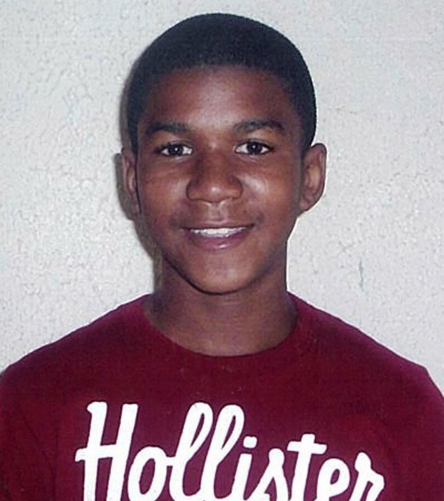Trayvon Martin, an unarmed 17-year-old black student, was fatally shot by George Zimmerman, a neighborhood watch volunteer, in Sanford, Florida. Martin was walking back from a convenience store when he was confronted by Zimmerman, who claimed he looked suspicious. Zimmerman followed Martin despite being told by the police dispatcher not to do so. A struggle ensued and Zimmerman shot Martin in the chest, killing him.
2012 - Emergence of Black Lives Matter
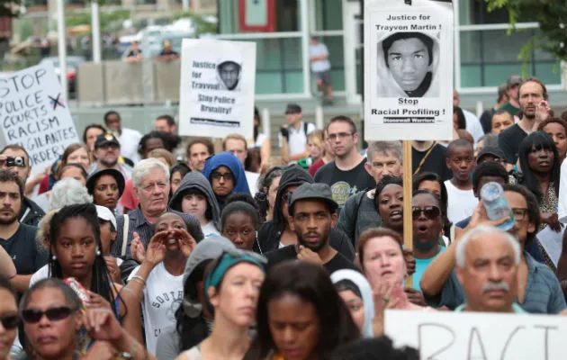Martin's death sparked national outrage, leading to widespread protests and the emergence of the Black Lives Matter movement, which was initially started as a hashtag (#BlackLivesMatter) on social media by activists Alicia Garza, Patrisse Cullors, and Opal Tometi. The movement quickly gained momentum, focusing on the issue of police brutality and racially motivated violence against Black people. The protesters demanded justice for Martin and called for Zimmerman's arrest and prosecution.
Zimmerman was eventually charged with second-degree murder and manslaughter, but was acquitted by a jury after claiming self-defense under Florid's Stand Your Ground law. The verdict sparked more protests and calls for reform of the law.
2013 - Founding of Black Lives Matter movement
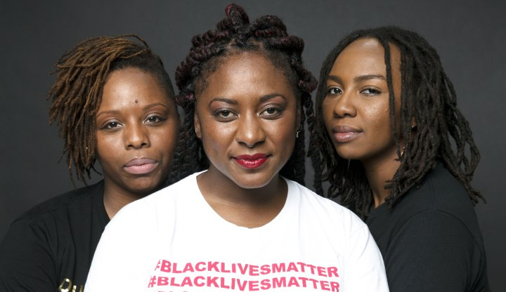Following the acquittal of Trayvon Martin's murderer, George Zimmerman, activists Alicia Garza, Patrisse Cullors, and Opal Tometi created the Black Lives Matter hashtag which soon spurred a global movement. The movement grew into a network of chapters and organizations across the country and the world, organizing protests, campaigns, events, and programs to address various issues affecting black communities, such as mass incarceration, education, health care, economic justice, environmental justice, LGBTQ+ rights, and more. The movement also aimed to affirm the humanity and dignity of black people and challenge the negative stereotypes and narratives that devalue their lives.
2014 - Murder of Michael Brown
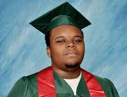Michael Brown Jr., an 18-year-old black man, was fatally shot by 28-year-old white Ferguson police officer Darren Wilson in the city of Ferguson, Missouri. Brown was unarmed and had his hands up saying "don't shoot" when he was shot multiple times by Wilson, who claimed he acted in self-defense. Brown's body was left on the street for four hours before being removed by the authorities.
2014 - Ferguson Uprising and Protests
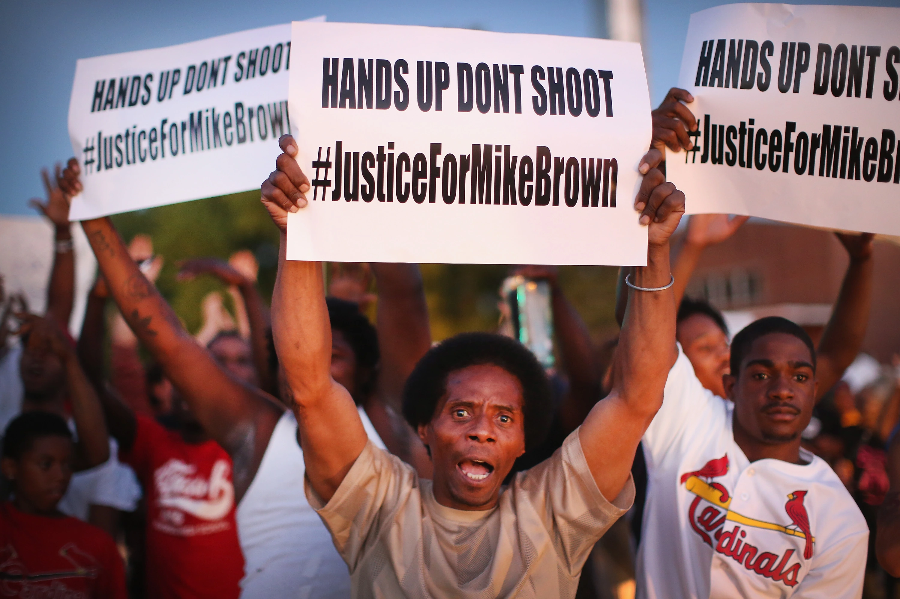Brow's death resulted in several protests and civil unrest in Ferguson, an event known as the Ferguson Uprising. The protests were met with a highly militarized police response, which included tear gas, rubber bullets, armored vehicles, and snipers. The protesters chanted “Hands up, don't shoot” and “Black lives matter”, demanding justice for Brown and an end to police brutality. The protests also spread to other cities across the country and the world.
The grand jury decided not to indict Wilson for Brown's death, sparking more outrage and protests. The U.S. Department of Justice also conducted an investigation and found that Wilson did not violate Brown's civil rights. However, the investigation also revealed that the Ferguson Police Department had a pattern of racial bias and discrimination against black residents, leading to several reforms and resignations.
2014 - Murder of Eric Garner
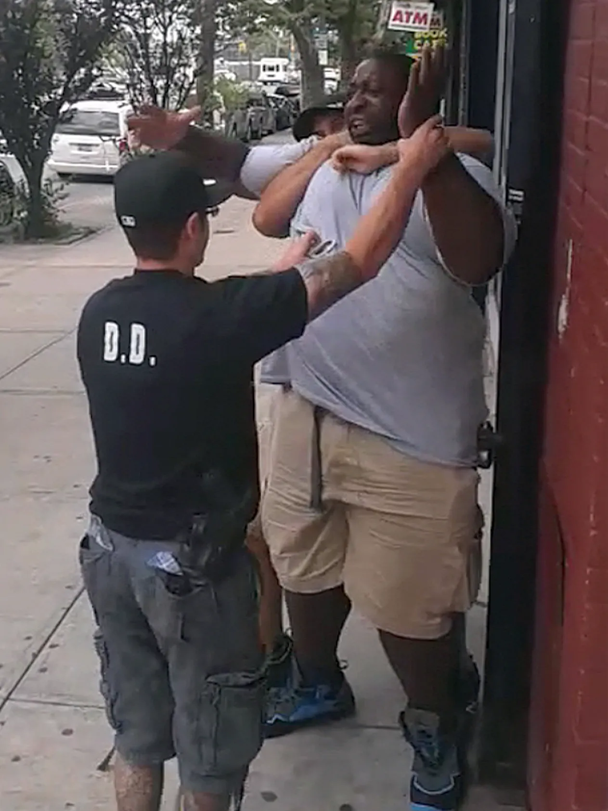Eric Garner died in the New York City borough of Staten Island after Daniel Pantaleo, a NYPD officer, put him in a prohibited chokehold while arresting him. Garner's words, "I can't breathe," were captured on video and became a rallying cry for protests against police brutality, and the event contributed to the growing national conversation about racial bias in law enforcement.
2014 - Eric Garner Protests and the “I Can't Breathe” Movement
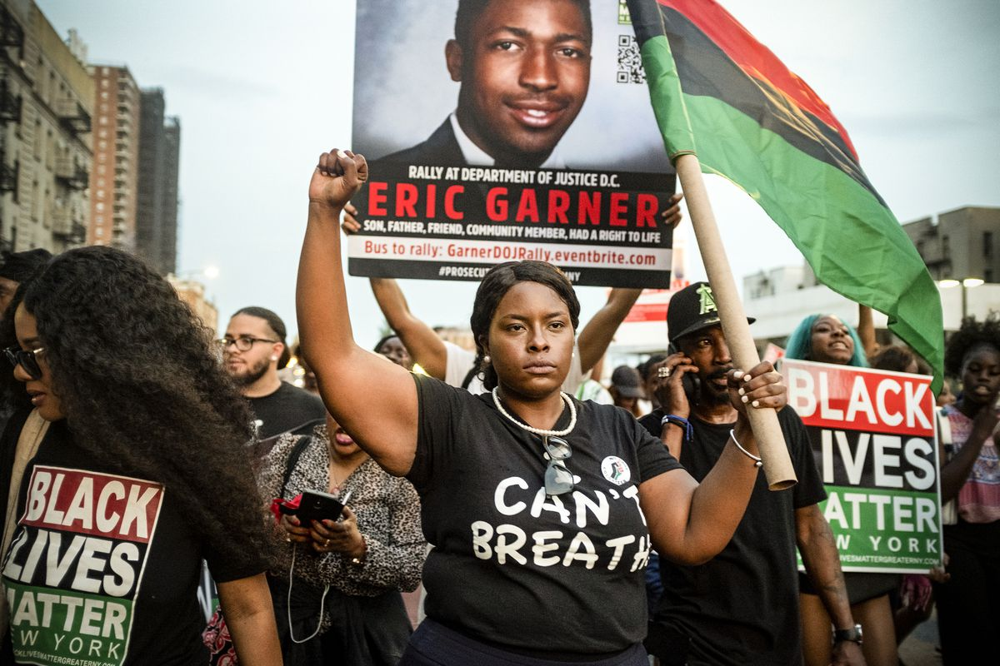Eric Garner died in the New York City borough of Staten Island after Daniel Pantaleo, a New York City Police Department (NYPD) officer, put him in a prohibited chokehold while arresting him. Garner's words, “I can't breathe”, were captured on video and became a rallying cry for protests against police brutality, and the event contributed to the growing national conversation about racial bias in law enforcement.
The protests were peaceful and diverse, involving thousands of people in New York and other cities. The protesters demanded justice for Garner and accountability for Pantaleo and other officers involved. The grand jury decided not to indict Pantaleo, sparking more anger and frustration. The U.S. Department of Justice also launched an investigation into Garner's death, but did not bring any charges against Pantaleo.
2016 - Murder of Philando Castile
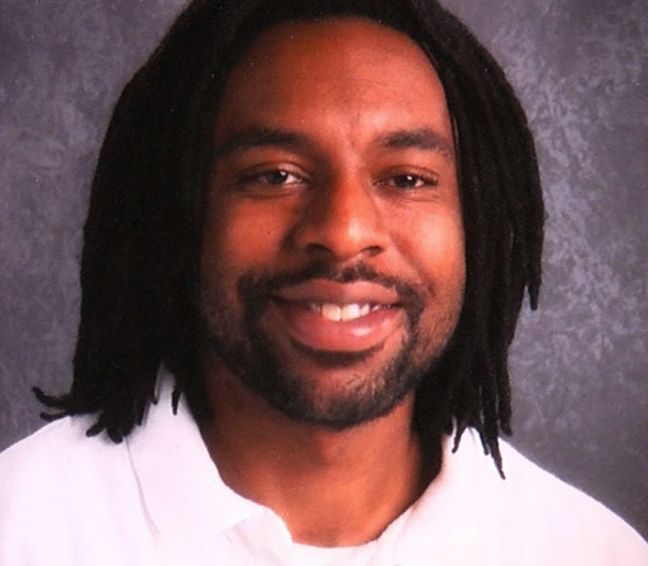Philando Castile, a 32-year-old black man, was fatally shot during a traffic stop by police officer Jeronimo Yanez of the St. Anthony, Minnesota police department. Castile's girlfriend, Diamond Reynolds, live-streamed the aftermath on Facebook, where Castile can be seen losing consciousness. Castile had informed Yanez that he had a licensed firearm in his possession, but was shot when he reached for his wallet.
2016 - Philando Castile Protests
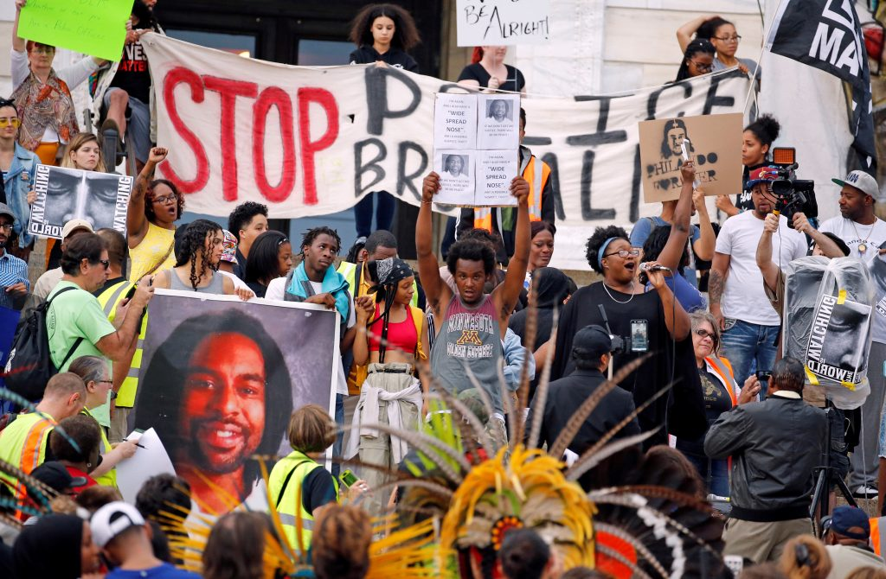The murder of Philando Castile led to widespread protests across the United States for an end to police violence. The trial ended with Officer Yanez being acquitted of all charges, further igniting the cause of the Black Lives Matter movement.
2020 - Murder of George Floyd
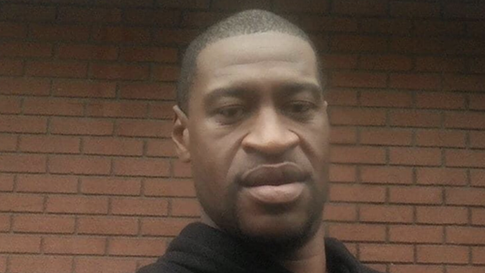George Floyd, a 46-year-old black man, was murdered in Minneapolis, Minnesota, during an arrest for allegedly using a counterfeit bill. Derek Chauvin, a white police officer, knelt on Floyd's neck for over nine minutes while Floyd was handcuffed and lying face down, begging for his life and repeatedly saying “I can't breathe”. Floyd's murder, captured on video, sparked some of the largest protests ever seen across the United States and around the world.
2020 - George Floyd Protests and the “Say His Name” Movement
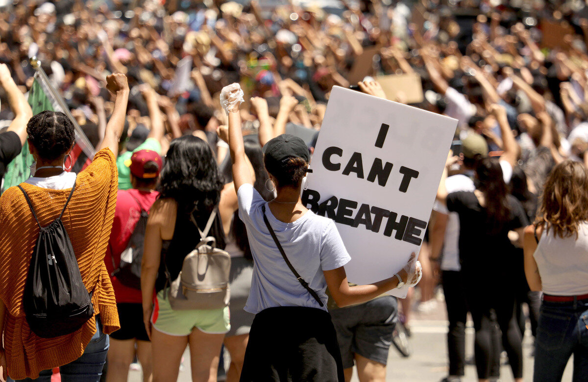The protests in response to George Floyd's murder were massive and diverse, involving millions of people in all 50 states and over 60 countries. The protesters demanded justice for Floyd and other victims of police brutality, as well as systemic reforms to end racial discrimination and violence. The protesters chanted “Say his name” and “Black lives matter”, as well as “No justice, no peace”. The protests also faced violent repression from the police and federal agents, who used tear gas, rubber bullets, batons, and pepper spray against the demonstrators.
The trial of Derek Chauvin resulted in his conviction of second-degree murder, third-degree murder, and second-degree manslaughter. He was sentenced to 22.5 years in prison. The other three officers involved in Floyd's arrest were also charged with aiding and abetting murder and manslaughter. The U.S. Department of Justice also launched a civil rights investigation into the Minneapolis Police Department.
2020 - Murder of Breonna Taylor's

Breonna Taylor, a 26-year-old black woman, was fatally shot in her Louisville, Kentucky apartment on March 13, 2020, when white plainclothes officers Jonathan Mattingly, Brett Hankison, and Myles Cosgrove of the Louisville Metro Police Department (LMPD) forced entry into the apartment as part of an investigation into drug dealing operations. The police used a no-knock warrant in the middle of the night to enter the home, but Taylor's home was the wrong one, resulting in her boyfriend (unknowingly) firing at the police resulting in return fire which killed Breonna. Taylor's death led to numerous protests calling for the officers involved to be charged with murder.
2020 - Breonna Taylor Protests and the “Say Her Name” Movement

The protests were part of the larger Black Lives Matter movement and also highlighted the issue of violence against black women and girls. The protesters chanted “Say her name” and “Breonna Taylor”, as well as “No justice, no peace”. The protests also faced resistance from the police and counter-protesters, who often clashed with the demonstrators. The trial of the officers involved in Taylor's death resulted in only one officer being charged with wanton endangerment for shooting into a neighboring apartment. The other two officers were not charged at all. The U.S. Department of Justice also launched a civil rights investigation into the LMPD.
2020 - Defund the Police Movement

In the wake of the numerous instances of police violence, many protests began advocating for a "Defund the Police " movement. The term is a slogan that supports divesting funds from police departments and reallocating them to non-policing forms of public safety and community support, such as social services, youth services, housing, education, healthcare and other community resources.
The movement argues that police reform is not enough to address the systemic racism and violence in law enforcement, and that reducing the role and power of the police is necessary to create safer and more equitable communities. The movement also challenges the notion that more policing equals more safety, and points out the disproportionate impact of policing on marginalized groups, such as people of color, low-income people, LGBTQ+ people, people with disabilities, and people with mental health issues.
2020 - Global Protests
In response to the murder of George Floyd, protests in support of the Black Lives Matter movement took place globally. Cities across continents saw massive turnout in protests, with people standing in solidarity against systemic racism and police brutality. The protests also sparked conversations about colonial history and systemic racism in many countries.


2021 - George Floyd Verdict
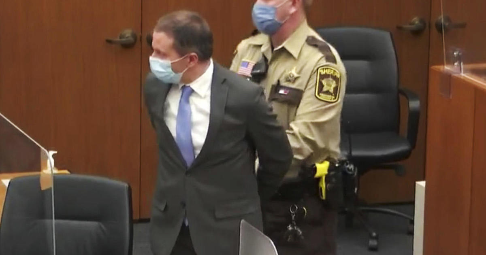On April 20, 2021, after a three-week trial and 10 hours of deliberation, the jury found Derek Chauvin guilty of second-degree murder, third-degree murder, and second-degree manslaughter for the murder of George Floyd. Chauvin was sentenced to 22.5 years in prison. The other three officers involved in Floyd's arrest were also charged with aiding and abetting murder and manslaughter.
2021 - Murder of Ahmaud Arbery
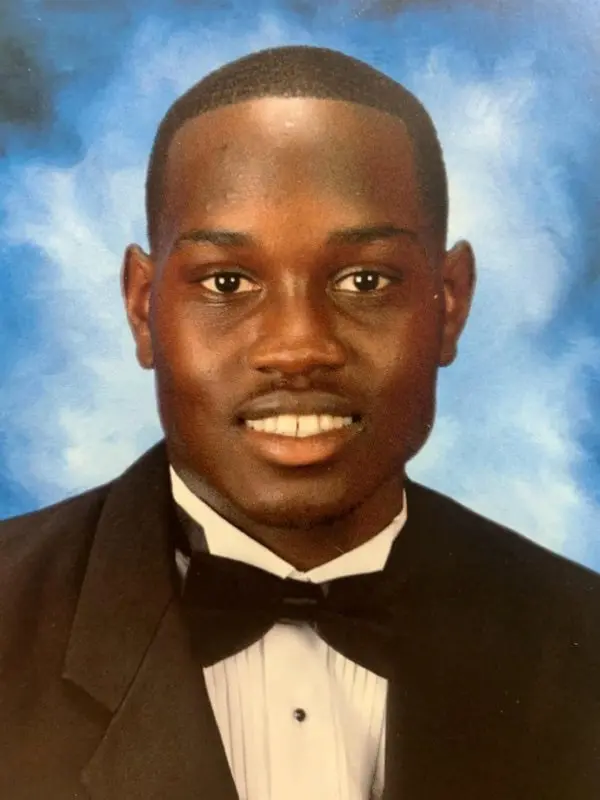Ahmaud Arbery, a 25-year-old black man, was fatally shot while jogging in a neighborhood near Brunswick in Glynn County, Georgia. Arbery was pursued and confronted by three white men — Gregory McMichael, his son Travis McMichael, and their neighbor William "Roddie" Bryan Jr. — who suspected him of being a burglar. The McMichaels armed themselves with guns and chased Arbery in a pickup truck, while Bryan followed them in another vehicle and recorded the incident on his cellphone. The video showed Arbery trying to run past the McMichaels' truck, then being met by Travis McMichael who shot him three times during a struggle.
2021 - Ahmaud Arbery Protests
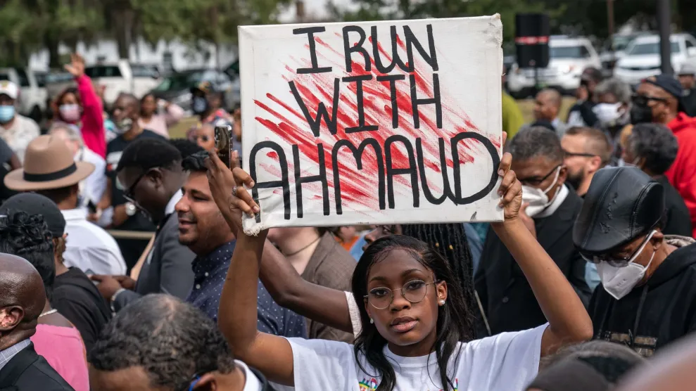The murder of Ahmaud Arbery sparked protests in Georgia and other states, demanding justice for Arbery and accountability for his killers. The protesters also criticized the handling of the case by the local authorities, who initially did not arrest or charge the suspects. The protesters chanted “Say his name” and “Ahmaud Arbery”, as well as “I run with Ahmaud”. The protests were peaceful and nonviolent, but also faced some threats from white supremacists.
The trial of the suspects resulted in them being charged with murder, aggravated assault, false imprisonment, and criminal attempt to commit false imprisonment. They pleaded not guilty and claimed they acted in self-defense. The U.S. Department of Justice also launched a hate crime investigation into the incident.
2021 - Murder of Elijah McClain
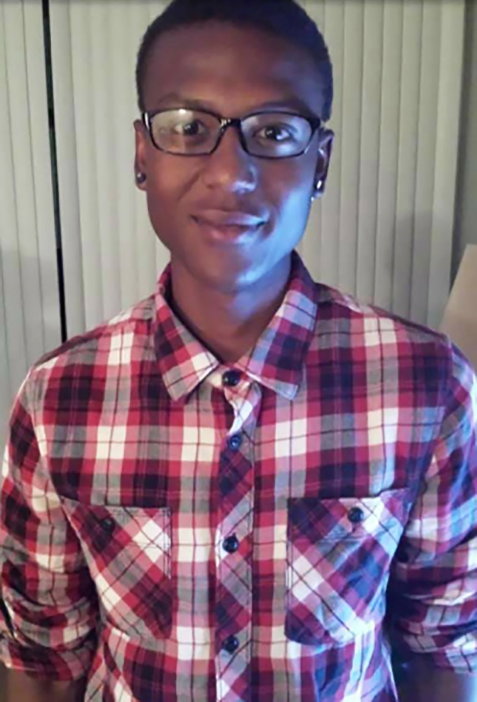Elijah McClain, a 23-year-old black man, died after being placed in a chokehold by police officers and injected with ketamine by paramedics in Aurora, Colorado. McClain was walking home from a convenience store when he was stopped by three white police officers — Nathan Woodyard, Jason Rosenblatt, and Randy Roedema — who responded to a call about a “suspicious person” wearing a ski mask. McClain was unarmed and had not committed any crime. He was wearing a ski mask because he had anemia and was cold.
The officers tackled McClain to the ground and put him in a chokehold that restricts blood flow to the brain. McClain pleaded with the officers, saying “I can't breathe”, “I'm an introvert”, and “I'm just different”. He also vomited and apologized repeatedly. The paramedics arrived and administered ketamine, a powerful sedative, to McClain without his consent. McClain suffered a cardiac arrest on the way to the hospital and was declared brain dead. He died six days later.
2021 - Elijah McClain Protests
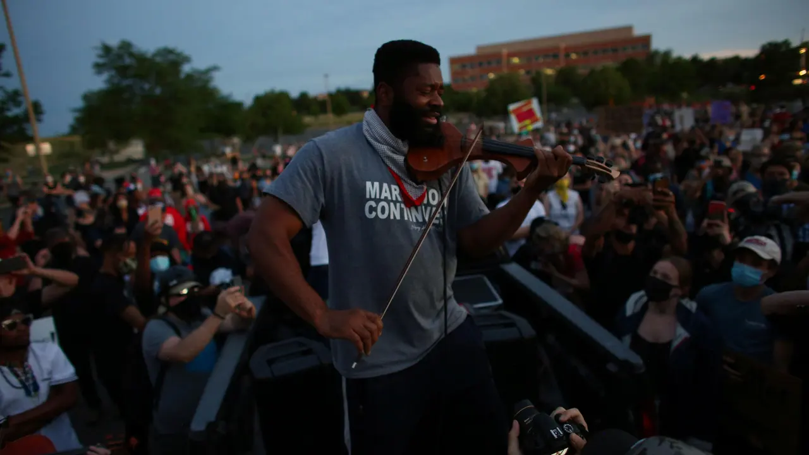The murder of Elijah McClain sparked protests in Aurora and other cities, demanding justice for McClain and accountability for the officers and paramedics involved. The protesters also criticized the handling of the case by the local authorities, who initially cleared the officers and paramedics of any wrongdoing. The protesters chanted “Say his name” and “Elijah McClain”, as well as “Black lives matter”. The protests were peaceful and nonviolent, but also faced some interference from the police and counter-protesters.
The trial of the officers and paramedics involved in McClain's death resulted in them being charged with manslaughter, criminally negligent homicide, assault, and official misconduct. They pleaded not guilty and claimed they acted in accordance with their training and protocols. The U.S. Department of Justice also launched a civil rights investigation into the incident.
2021 - Ahmaud Arbery Verdict
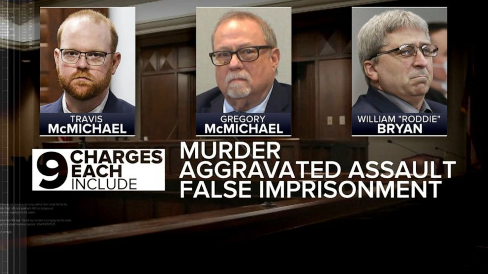On November 24, 2021, after a two-and-a-half-week trial and 11 hours of deliberation, the jury found Gregory McMichael, his son Travis McMichael, and William "Roddie" Bryan Jr. guilty of murder and other charges for the killing of Ahmaud Arbery. The three men faced a maximum sentence of life in prison without parole.
The verdict of Ahmaud Arbery's killers sparked reactions across the country and the world, with many people expressing relief and gratitude for the outcome. The verdict was seen as a rare instance of justice and accountability for a Black person who was killed by white vigilantes. The verdict was also praised as a result of the courage and perseverance of Arbery's family and supporters, as well as the witnesses and activists who fought for his case. However, many also acknowledged that the verdict did not erase the pain and trauma caused by Arbery's death, and that more work and reforms were needed to prevent such tragedies from happening again.
Black Lives Matter Future
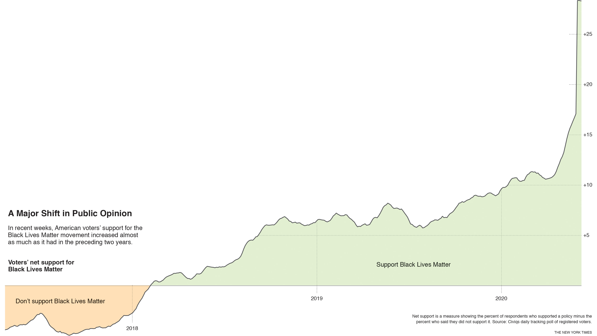The Black Lives Matter movement has had a massive impact on the American consciousness and mobilized millions of activists to raise awareness about police reform and racial inequality in the US. The movement effectively leveraged social media and television to show the stark reality of violance by the police against black Americans and grow support for a movement most white Americans didn't care about. Moreover, it caused a variety of concrete changes like:
- Several states and cities enacted laws and policies to reform their police departments, such as banning chokeholds, limiting use-of-force, increasing transparency and accountability, diverting funds to social services, and creating civilian review boards.
- Corporations and organizations supported racial equity and diversity initiatives, such as donating money to social justice causes, hiring more people of color, creating anti-racism programs, and promoting Black-owned businesses.
- Celebrities and influencers used their platforms to raise awareness and funds for the Black Lives Matter movement and other related causes, by donating money, participating in protests, speaking out against racism, and amplifying black voices.
- Media outlets and platforms increased their coverage and representation of Black stories and perspectives by featuring more black journalists, authors, artists, and creators, highlighting black history and culture, and addressing racial issues and biases.
- Educational institutions and educators incorporated more Black history and culture into their curricula and classrooms, as well as addressed racial disparities and discrimination in their policies and practices.
- Sports leagues and athletes expressed their solidarity and support for the Black Lives Matter movement and other related causes, through wearing shirts and masks with messages, kneeling during the national anthem, boycotting games, and speaking out against racism.
Despite some progress, The Black Lives Matter movement's work is obviously not over. Federally, and across many states and cities, police reform failed to pass, so there is clearly a lot of work to do to achieve its goals and vision of a world where black lives are equally valued and respected.